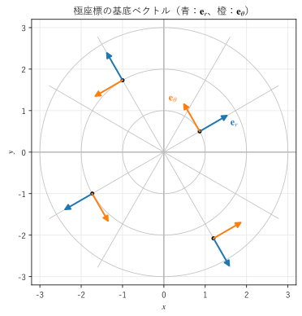
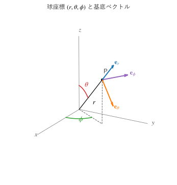

第 9 章 曲線座標系
円や球、円筒のような対称性を持つ問題は、直交座標 \((x, y, z)\) よりも、極座標、円柱座標、球座標を使うと式が簡単になる。この章では、これらの座標系の定義と基底ベクトルの性質を説明し、スケール因子を使って勾配・発散・回転・ラプラシアンを直交曲線座標系で表す方法を導く。
曲線座標系が必要な理由
点電荷がつくる電場の強さは、電荷からの距離 \(r\) だけで決まる。直交座標で書くと
となり、発散を計算するには 3 つの成分をそれぞれ偏微分しなければならない。一方、後で説明する球座標を使うと \(\bm{E} = \dfrac{q}{4 \pi \varepsilon_0 r^2} \bm{e}_r\) と 1 つの成分だけで書ける。問題の対称性に合った座標系を選ぶと、場の式も計算も簡単になる。
ただし、曲線座標系では基底ベクトルの向きが場所によって変わる。そのため、勾配・発散・回転を直交座標の式の \(x, y, z\) を単純に置き換えて求めることはできない。この章の目標は、その違いを正しく扱う方法を身に付けることである。
極座標
平面上の点の位置を、原点からの距離 \(r\) と、\(x\) 軸から反時計回りに測った角度 \(\theta\) で表すのが極座標である。直交座標との関係は次のとおりである。
\(r\) だけを少し増やしたときに点が動く向きの単位ベクトルを \(\bm{e}_r\)、\(\theta\) だけを少し増やしたときに点が動く向きの単位ベクトルを \(\bm{e}_\theta\) とする。位置ベクトル \(\bm{r} = (r\cos\theta, r\sin\theta)\) を偏微分すると
となる。それぞれの大きさは \(1\) と \(r\) なので、大きさで割って単位ベクトルにすると
を得る。\(\bm{e}_r \cdot \bm{e}_\theta = 0\) なので、2 つは直交している。
図 12 は、いくつかの点で \(\bm{e}_r\) と \(\bm{e}_\theta\) を描いたものである。直交座標の \(\bm{e}_x\), \(\bm{e}_y\) はどこでも同じ向きだが、極座標の基底ベクトルは点の位置（角度 \(\theta\)）によって向きが変わる。


図 12 極座標の座標曲線と基底ベクトル
基底ベクトルを \(\theta\) で微分すると、次のようになる。
ベクトル場 \(\bm{F} = F_r \bm{e}_r + F_\theta \bm{e}_\theta\) を微分するときは、成分 \(F_r\), \(F_\theta\) だけでなく、基底ベクトル自体の変化も考えなければならない。これが、曲線座標系で発散や回転の式が複雑になる原因である。
16def polar_basis(theta: float) -> tuple[NDArray[np.float64], NDArray[np.float64]]:
17 """角度 theta の点での単位ベクトル e_r と e_θ を返す."""
18 e_r = np.array([np.cos(theta), np.sin(theta)])
19 e_theta = np.array([-np.sin(theta), np.cos(theta)])
20 return e_r, e_theta
サンプルの全体：ch09_polar_basis.py
円柱座標
3 次元の点を、\(xy\) 平面への射影を極座標で表し、高さ \(z\) を加えて表すのが円柱座標である。本書では、\(z\) 軸からの距離を \(\rho\)、方位角を \(\phi\) と書く。
基底ベクトルは次の 3 つである。
\(\rho\) が一定の面は \(z\) 軸を中心とする円筒面、\(\phi\) が一定の面は \(z\) 軸を含む半平面、\(z\) が一定の面は水平な平面である。円管の中の流れ、電線のまわりの磁場、回転軸のある機械など、軸のまわりの対称性を持つ問題に向いている。
球座標
3 次元の点を、原点からの距離 \(r\)、\(z\) 軸から測った角度 \(\theta\)（天頂角）、\(x\) 軸から \(xy\) 平面内で測った角度 \(\phi\)（方位角）で表すのが球座標である（図 13）。
基底ベクトルは次のとおりである。
\(\bm{e}_r\) は原点から外向き、\(\bm{e}_\theta\) は経線に沿って南向き（\(\theta\) が増える向き）、\(\bm{e}_\phi\) は緯線に沿って東向きである。\((\bm{e}_r, \bm{e}_\theta, \bm{e}_\phi)\) はこの順に右手系をなし、\(\bm{e}_r \times \bm{e}_\theta = \bm{e}_\phi\) が成り立つ。


図 13 球座標の意味と点 P での基底ベクトル
注釈
2 次元の極座標の \(\theta\) は \(x\) 軸からの角度だが、球座標の \(\theta\) は \(z\) 軸からの角度である。また、物理と数学の教科書で \(\theta\) と \(\phi\) の役割が逆の場合がある。本書は物理で一般的な記法（\(\theta\) が天頂角、\(\phi\) が方位角）に従う。他の資料を読むときは、どちらの記法かを最初に確認するとよい。
球座標は、点電荷や惑星の重力のように、1 点を中心とする対称性（球対称性）を持つ問題に向いている。
24def spherical_basis(theta: float, phi: float) -> Basis:
25 """角度 (θ, φ) の点での単位ベクトル e_r, e_θ, e_φ を返す."""
26 e_r = np.array([np.sin(theta) * np.cos(phi), np.sin(theta) * np.sin(phi), np.cos(theta)])
27 e_theta = np.array([np.cos(theta) * np.cos(phi), np.cos(theta) * np.sin(phi), -np.sin(theta)])
28 e_phi = np.array([-np.sin(phi), np.cos(phi), 0.0])
29 return e_r, e_theta, e_phi
サンプルの全体：ch09_spherical_basis.py
スケール因子と線素・面素・体積素
直交曲線座標系
一般に、3 つの数 \((u_1, u_2, u_3)\) で点の位置 \(\bm{r}(u_1, u_2, u_3)\) を表す方法を曲線座標系という。各点で 3 つの基底ベクトルが互いに直交するものを直交曲線座標系という。円柱座標と球座標は直交曲線座標系である。本書では直交曲線座標系だけを扱う。
スケール因子
座標 \(u_i\) を \(du_i\) だけ増やしたとき、点が実際に動く距離は \(du_i\) そのものではない。たとえば極座標で \(\theta\) を \(d\theta\) だけ増やすと、点は半径 \(r\) の円周に沿って \(r \, d\theta\) だけ動く。この倍率をスケール因子といい、次の式で定義する。
基底ベクトルは \(\bm{e}_i = \dfrac{1}{h_i} \dfrac{\partial \bm{r}}{\partial u_i}\) であり、位置の微小な変化は
と書ける。主な座標系のスケール因子を表 13 に示す。
座標系 |
座標 |
スケール因子 |
|---|---|---|
直交座標 |
\((x, y, z)\) |
\(h_x = 1, \ h_y = 1, \ h_z = 1\) |
円柱座標 |
\((\rho, \phi, z)\) |
\(h_\rho = 1, \ h_\phi = \rho, \ h_z = 1\) |
球座標 |
\((r, \theta, \phi)\) |
\(h_r = 1, \ h_\theta = r, \ h_\phi = r \sin\theta\) |
球座標の \(h_\phi = r \sin\theta\) は、\(\phi\) を変えたとき点が動く円（緯線）の半径が \(r \sin\theta\) であることを表している。
線素・面素・体積素
基底ベクトルが直交しているので、微小な移動の長さ（線素）は三平方の定理から求まる。
座標を \(du_1, du_2, du_3\) だけ変えてできる微小な領域は、辺の長さが \(h_1 du_1\), \(h_2 du_2\), \(h_3 du_3\) の直方体とみなせる。したがって、\(u_3\) が一定の面上の面素と体積素は次のようになる。
円柱座標と球座標の体積素は次のとおりである。
半径 \(R\) の球面上の面素は \(dS = h_\theta h_\phi \, d\theta \, d\phi = R^2 \sin\theta \, d\theta \, d\phi\) である。これらは重積分の変数変換で現れるヤコビアンと一致する。積分での使い方は第 10 章と第 12 章で説明する。
直交曲線座標系での勾配
勾配は、全微分 \(df = \nabla f \cdot d\bm{r}\) を満たすベクトルとして特徴付けられる（第 5 章）。曲線座標でも \(f\) の全微分は
である。\(\nabla f = G_1 \bm{e}_1 + G_2 \bm{e}_2 + G_3 \bm{e}_3\) とおき、\(d\bm{r} = \sum_i h_i \, du_i \, \bm{e}_i\) との内積が \(df\) に等しいとすると \(G_i h_i = \partial f / \partial u_i\) を得る。したがって
となる。\(1/h_i\) は、座標の変化を実際の距離に直すための係数である。円柱座標と球座標では次のようになる。
例として \(f = 1/r\) の勾配を求める。\(f\) は \(r\) だけの関数なので、\(\nabla (1/r) = -\dfrac{1}{r^2} \bm{e}_r\) となる。直交座標で 3 つの偏微分を計算するよりずっと簡単である。
直交曲線座標系での発散
円柱座標での導出
発散は、微小な領域から出ていく正味の流束を、領域の体積で割ったものであった（第 6 章）。円柱座標で、\(\rho\) から \(\rho + \Delta\rho\)、\(\phi\) から \(\phi + \Delta\phi\)、\(z\) から \(z + \Delta z\) までの微小な領域を考える。体積は \(\rho \, \Delta\rho \, \Delta\phi \, \Delta z\) である。ベクトル場を \(\bm{F} = F_\rho \bm{e}_\rho + F_\phi \bm{e}_\phi + F_z \bm{e}_z\) とする。
\(\rho\) が一定の 2 つの面：面積は \(\rho \, \Delta\phi \, \Delta z\) で、\(\rho\) によって変わる。外側の面から出る量と内側の面から入る量の差は、\(F_\rho \rho\) の変化として
\[\left[ F_\rho \rho \right]_{\rho + \Delta\rho} \Delta\phi \, \Delta z - \left[ F_\rho \rho \right]_{\rho} \Delta\phi \, \Delta z \approx \frac{\partial (\rho F_\rho)}{\partial \rho} \Delta\rho \, \Delta\phi \, \Delta z\]\(\phi\) が一定の 2 つの面：面積はどちらも \(\Delta\rho \, \Delta z\) なので、差は \(\dfrac{\partial F_\phi}{\partial \phi} \Delta\phi \, \Delta\rho \, \Delta z\) である。
\(z\) が一定の 2 つの面：面積はどちらも \(\rho \, \Delta\rho \, \Delta\phi\) なので、差は \(\dfrac{\partial F_z}{\partial z} \Delta z \, \rho \, \Delta\rho \, \Delta\phi\) である。
3 つを足して体積 \(\rho \, \Delta\rho \, \Delta\phi \, \Delta z\) で割ると、円柱座標での発散を得る。
第 1 項に \(\rho\) が入るのは、外側の面ほど面積が大きいからである。\(\nabla \cdot \bm{F}\) を \(\partial F_\rho / \partial \rho + \partial F_\phi / \partial \phi + \partial F_z / \partial z\) としてはいけない。
一般の公式
同じ考え方を一般の直交曲線座標系に当てはめると、\(u_1\) が一定の面の面積は \(h_2 h_3 \, du_2 \, du_3\)、体積は \(h_1 h_2 h_3 \, du_1 \, du_2 \, du_3\) なので、次の公式を得る。
球座標では次のようになる。
例として、点電荷の電場 \(\bm{E} = \dfrac{q}{4 \pi \varepsilon_0 r^2} \bm{e}_r\) の発散を求める。\(r^2 E_r = q / (4 \pi \varepsilon_0)\) は定数なので、\(r > 0\) では
となる。電荷のない場所では電場の湧き出しがないことが、1 行の計算で確かめられる。原点（電荷のある点）での扱いは第 14 章で説明する。
直交曲線座標系での回転
円柱座標での導出
回転の成分は、その成分の向きを法線とする微小な面を一周したときの循環を、面積で割ったものであった（第 7 章）。円柱座標の \(z\) 成分を求めるため、\(z\) が一定の平面上で、\(\rho\) から \(\rho + \Delta\rho\)、\(\phi\) から \(\phi + \Delta\phi\) で囲まれた扇形の一部を反時計回りに一周する。
外側の円弧（長さ \((\rho + \Delta\rho) \Delta\phi\)、\(\bm{e}_\phi\) の向きに進む）と内側の円弧（長さ \(\rho \, \Delta\phi\)、逆向きに進む）の寄与の和は
\[\left[ \rho F_\phi \right]_{\rho + \Delta\rho} \Delta\phi - \left[ \rho F_\phi \right]_{\rho} \Delta\phi \approx \frac{\partial (\rho F_\phi)}{\partial \rho} \Delta\rho \, \Delta\phi\]2 本の半径方向の辺（長さ \(\Delta\rho\)）の寄与の和は \(-\dfrac{\partial F_\rho}{\partial \phi} \Delta\phi \, \Delta\rho\) である。
面積 \(\rho \, \Delta\rho \, \Delta\phi\) で割ると、\(z\) 成分は次のようになる。
他の成分も同様に求められ、円柱座標での回転は次のようになる。
一般の公式
一般の直交曲線座標系では、行列式の形で次のように書ける。\(\bm{e}_1, \bm{e}_2, \bm{e}_3\) はこの順に右手系をなすものとする。
球座標では次のようになる。
例として、第 7 章の 2 つの流れを円柱座標で調べる。
角速度 \(\omega\) の剛体回転 \(\bm{v} = \omega \rho \, \bm{e}_\phi\)：\((\nabla \times \bm{v})_z = \dfrac{1}{\rho} \dfrac{\partial (\omega \rho^2)}{\partial \rho} = 2\omega\) となり、回転は角速度の 2 倍である。
自由渦 \(\bm{v} = \dfrac{\Gamma}{2 \pi \rho} \bm{e}_\phi\)：\(\rho v_\phi = \Gamma / (2\pi)\) は定数なので、\(\rho > 0\) では回転は 0 である。
直交座標で計算すると分数の偏微分が必要になるが、円柱座標では 1 行で済む。
直交曲線座標系でのラプラシアン
ラプラシアンは勾配の発散 \(\nabla^2 f = \nabla \cdot (\nabla f)\) なので、勾配の公式を発散の公式に代入すれば求まる。
円柱座標と球座標では次のようになる。
たとえば \(f = 1/r\) は、\(r^2 \, \partial f / \partial r = -1\) が定数なので、\(r > 0\) で \(\nabla^2 (1/r) = 0\) を満たす。この関数は第 16 章でポアソン方程式の解として再び現れる。
ベクトル場のラプラシアン \(\nabla^2 \bm{F}\) は、第 8 章で述べたように、曲線座標では成分ごとのラプラシアンにならないので、\(\nabla^2 \bm{F} = \nabla (\nabla \cdot \bm{F}) - \nabla \times (\nabla \times \bm{F})\) で計算する。
例：円管の中の流れ
半径 \(R\) の円管の中を流れる粘性流体の、ゆっくりとした定常な流れ（ハーゲン・ポアズイユ流れ）の速度は
で与えられる。中心で最も速く、管の壁（\(\rho = R\)）で 0 になる。円柱座標の公式を使うと、次のことが分かる。
発散：\(v_z\) は \(z\) によらないので \(\nabla \cdot \bm{v} = 0\) である。流体が途中で増えたり減ったりしない。
回転：\(\nabla \times \bm{v} = -\dfrac{\partial v_z}{\partial \rho} \bm{e}_\phi = \dfrac{2 v_{\max} \rho}{R^2} \bm{e}_\phi\) である。流れはまっすぐだが、速さが場所によって違うため、流れの中に置いた小さな羽根車は回る。回転は壁の近くほど大きい。
ラプラシアン：\(\nabla^2 v_z = \dfrac{1}{\rho} \dfrac{d}{d\rho} \left( \rho \dfrac{d v_z}{d \rho} \right) = -\dfrac{4 v_{\max}}{R^2}\) は一定である。粘性流体の運動方程式では、この値に粘性係数を掛けたものが、管の長さ方向の圧力の勾配とつり合う。
SymPy で確かめる
スケール因子さえ分かれば、勾配・発散・回転・ラプラシアンは機械的に計算できる。次のサンプルは、位置ベクトルからスケール因子を求め、一般の公式で各演算を計算する。最後に、球座標の公式で求めた \(f = x^2 y + z^2\) のラプラシアンが、直交座標で求めた \(2y + 2\) と一致することを確かめている。
32def divergence(field: Vector, coords: Vector, h: Vector) -> Expr:
33 """発散 (1/(h1 h2 h3)) Σ ∂(h1 h2 h3 F_i / h_i)/∂u_i を返す."""
34 jac = h[0] * h[1] * h[2]
35 return sp.simplify(sum(sp.diff(jac / hi * fi, u) for fi, u, hi in zip(field, coords, h)) / jac)
38def rotation(field: Vector, coords: Vector, h: Vector) -> Vector:
39 """回転の成分を返す（i, j, k は 1, 2, 3 の巡回的な並び）."""
40 result = []
41 for i in range(3):
42 j, k = (i + 1) % 3, (i + 2) % 3
43 comp = (sp.diff(h[k] * field[k], coords[j]) - sp.diff(h[j] * field[j], coords[k])) / (h[j] * h[k])
44 result.append(sp.simplify(comp))
45 return (result[0], result[1], result[2])
スケール因子
円柱座標 (rho, phi, z): (1, rho, 1)
球座標 (r, theta, phi): (1, r, r*sin(theta))
円柱座標
剛体回転 v = omega*rho e_phi の回転: (0, 0, 2*omega)
自由渦 v = Gamma/(2*pi*rho) e_phi の回転: (0, 0, 0)
円管の流れ v = v_max*(1 - rho^2/R^2) e_z
発散: 0
回転: (0, 2*rho*v_max/R**2, 0)
v_z のラプラシアン: -4*v_max/R**2
球座標
1/r の勾配: (-1/r**2, 0, 0)
点電荷の電場 E = q/(4*pi*epsilon_0*r^2) e_r の発散: 0
1/r のラプラシアン: 0
確認: f = x^2*y + z^2 のラプラシアン
球座標の公式で計算して 2*y + 2 を引いた差: 0
剛体回転の回転が \(2\omega\)、自由渦の回転が 0、点電荷の電場の発散が 0 になり、本文の計算と一致している。円管の流れの回転は \((0, 2 \rho v_{\max} / R^2, 0)\) と表示されているが、これは \((\bm{e}_\rho, \bm{e}_\phi, \bm{e}_z)\) 成分の順である。
サンプルの全体：ch09_orthogonal_ops.py
この章のまとめ
円柱座標 \((\rho, \phi, z)\) は軸対称な問題に、球座標 \((r, \theta, \phi)\) は球対称な問題に向いている。
曲線座標系の基底ベクトルは場所によって向きが変わる。そのため、微分演算の式は直交座標の式の置き換えでは得られない。
スケール因子 \(h_i = |\partial \bm{r} / \partial u_i|\) は、座標の変化を実際の距離に直す係数である。体積素は \(h_1 h_2 h_3 \, du_1 \, du_2 \, du_3\) になる。
勾配・発散・回転・ラプラシアンは、スケール因子を使った一般の公式で表せる。発散と回転の公式は、微小な領域の流束と循環から導ける。
対称性に合った座標系を使うと、点電荷の電場や渦の計算が 1 行で済む。